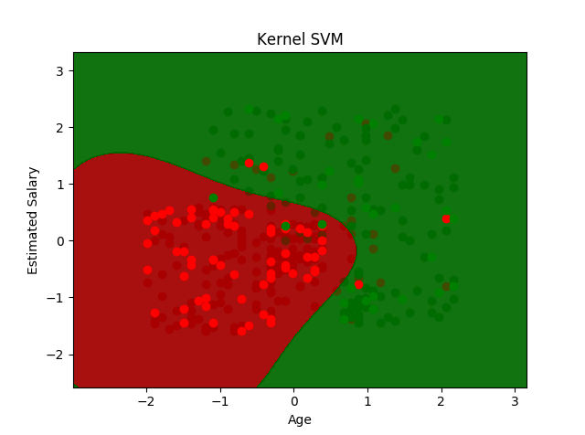
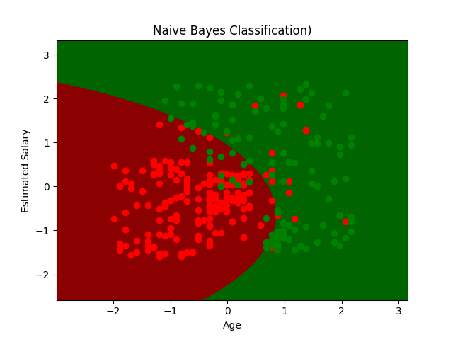
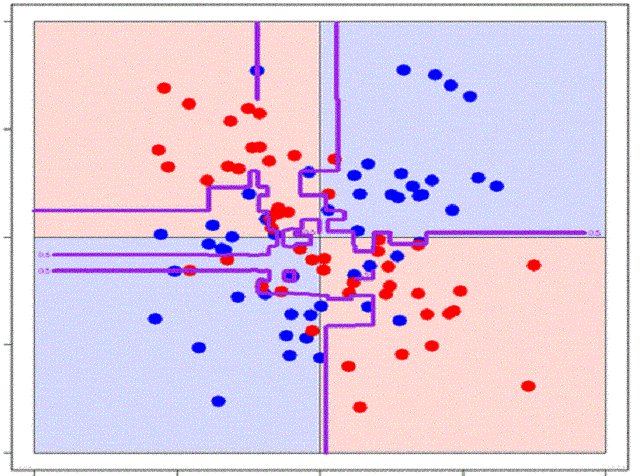

Red Wine Classification Problem
Dataset source & problem description
Dataset includes red "Vinho Verde" wine samples from the north of Portugal. Observations involve physico-chemical properties as well as sample rank given by the professional tasters (the "quality"). How wine market values each wine usually depends on those quality ratings. Gathered opinions of experienced sommeliers is usually becoming final judgement of wine's quality. But is it possible, with a series of laboratory tests, to predict which quality rating will be given to a wine? Could wine tester judgment be somehow related to wine chemical proportions? With given dataset we'll try to create artificial sommelier that based on physico-chemical features can predict which quality rating will be given.
No. of Rows: 1599 • No. of Columns: 12
UC Irvine Machine Learning Repository - Wine Quality Data SetDataset Overview
Download CodeVizualizing first 10 rows of a dataset with Pandas dataset.head()
| fixed acidity | volatile acidity | citric acid | residual sugar | chlorides | free sulfur dioxide | total sulfur dioxide | density | pH | sulphates | alcohol | quality |
|---|---|---|---|---|---|---|---|---|---|---|---|
| {{row["fixed acidity"]}} | {{row["volatile acidity"]}} | {{row["citric acid"]}} | {{row["residual sugar"]}} | {{row["chlorides"]}} | {{row["free sulfur dioxide"]}} | {{row["total sulfur dioxide"]}} | {{row.density}} | {{row.pH}} | {{row.sulphates}} | {{row.alcohol}} | {{row.quality}} |
Dataset Statistics
Generating descriptive statistics to summarize central tendency, dispersion and shape of a dataset’s distribution with pandas dataset.describe()
| fixed acidity | volatile acidity | citric acid | residual sugar | chlorides | free sulfur dioxide | total sulfur dioxide | density | pH | sulphates | alcohol | quality | |
|---|---|---|---|---|---|---|---|---|---|---|---|---|
| {{ statistics[index]}} | {{row["fixed acidity"]}} | {{row["volatile acidity"]}} | {{row["citric acid"]}} | {{row["residual sugar"]}} | {{row["chlorides"]}} | {{row["free sulfur dioxide"]}} | {{row["total sulfur dioxide"]}} | {{row.density}} | {{row.pH}} | {{row.sulphates}} | {{row.alcohol}} | {{row.quality}} |
Feature Distribution & Correlations
Vizualizing feature distribution and correlation in a dataset
Dataset Insights
Dataset valuable observations
High disproportion between min & max values of each feature. We might be dealing with outliers.
Imbalanced record distribution of quality class. Quality "3" & "8" have both representation below 20 records.
Strongest correlation between quality and alcohol, volatile acidity, citric acid, sulphates features.
Problem can be seen as an either classification or regression, take on account that quality grows continuously.
Dataset Trends
As seen on a graphs below for most correlated features we can see strongest upward trend on alcohol graph and clear inverse correlation on volatile acidity graph.


Classification Algorithms
Machine learning classification problem overview
Classification identifies to which of a set of categories a new observation belongs. Classification problem is an example of pattern recognition that predict a probability of a given example belonging to each output class. The output variables are often called labels or categories. There are a number of classification models. Most popular are - Naive Bayes, Random Forest, Logistic Regression and SVR.
Classification problem examples: Email spam detector • Speech Recognition • DNA Sequence Classification
Preprocessing steps: One Hot Encoding • Label Encoding • Feature Standardization • Train-Test Split
Possible issues & pitfalls: Dummy Variable Trap • Overfitting
Dataset Preprocessing
We'll use sklearn library to reshuffle our dataset - we want to avoid any particular samples order that could somehow disrupt machine learning process. Our X,y separated dataset:
| fixed acidity | volatile acidity | citric acid | residual sugar | chlorides | free sulfur dioxide | total sulfur dioxide | density | pH | sulphates | alcohol |
|---|---|---|---|---|---|---|---|---|---|---|
| {{row["fixed acidity"]}} | {{row["volatile acidity"]}} | {{row["citric acid"]}} | {{row["residual sugar"]}} | {{row["chlorides"]}} | {{row["free sulfur dioxide"]}} | {{row["total sulfur dioxide"]}} | {{row.density}} | {{row.pH}} | {{row.sulphates}} | {{row.alcohol}} |
| quality |
|---|
| {{row.quality}} |
Features Standardization
Standardization is commonly required for machine learning tasks. It helps to avoid weighting imbalances among features. We'll use StandardScaler from sklearn library:
| fixed acidity | volatile acidity | citric acid | residual sugar | chlorides | free sulfur dioxide | total sulfur dioxide | density | pH | sulphates | alcohol |
|---|---|---|---|---|---|---|---|---|---|---|
| {{row["fixed acidity"]}} | {{row["volatile acidity"]}} | {{row["citric acid"]}} | {{row["residual sugar"]}} | {{row["chlorides"]}} | {{row["free sulfur dioxide"]}} | {{row["total sulfur dioxide"]}} | {{row.density}} | {{row.pH}} | {{row.sulphates}} | {{row.alcohol}} |
Train-Test Split
Download CodeWe'll use 80% of a dataset to train our machine learning model. Other 20% we'll use to measure it's performance. With use of sklearn.model_selection library:
X_train records: {{ X_train_len }}
X_test records: {{ X_test_len }}
ML Algorithm Selection
We'll run a quick performance test of various classification algorithms:
Logistic Regression

SVM
Naive Bayes
Random Forest

GT Boosting
AdaBoost

Algorithms Initial Performance
To measure initial performance, we'll fit raw models to our training set (without specifying any parameters) using k-Fold Cross Validation technique:
| Algorithm | Accuracy Mean | Accuracy Std. |
|---|---|---|
| {{row.algorithm}} | {{row.accuracy_mean}} | {{row.accuracy_std}} |
Conclusion
Classification algorithm choice
Predicting all 6 classes it's not an easy task and we can see that Naive Bayes and AdaBoost didn't handle it well. Other bottom performers were Logistic Regression and KNN. Standard deviation was under 5% (except NB - 15%!). Let's keep only 4 top performance for now and try to tune some hyperparameters.
Hyperparameters Tuning
In order to choose optimal parameters for each algorithm, we'll use GridSearchCV from sklearn library:
Optimal parameters for Linear SVM: {'C': 1, 'kernel' : 'linear'}
Optimal parameters for Kernel SVM: {'C': 10, 'gamma': 1.0, 'kernel': 'rbf'}
Optimal parameters for RandomForest: {'criterion': 'entropy', 'min_samples_leaf': 3, max_depth': 110, 'max_features': 3, 'min_samples_split': 5, 'n_estimators': 200}
Optimal parameters for Gradient Tree Boosting: {'learning_rate': 0.1, max_features = 0.1, 'n_estimators': 450}
Algorithms Performance after Tuning
Again, we'll measure model performance using k-Fold Cross Validation technique. Additionally we'll try out Vote Classifier built with all four other classifiers:
| Algorithm | Accuracy Mean | Accuracy Std. |
|---|---|---|
| {{row.algorithm}} | {{row.accuracy_mean}} | {{row.accuracy_std}} |
Predicting Test Set Values
Download CodeLet's see how our models are performing on a test set (y_test):
| Algorithm | Accuracy Mean |
|---|---|
| {{row.algorithm}} | {{row.accuracy_mean}} |
Conclusion
Final thoughts regarding algorithms tuning process
With given data samples avg 70% accuracy is the highest as we can reach. There is a high probability that with more data we could predict quality with better precision. Generally, ensemble models (RF, GTB) outperform other algorithms in this task. Now, let us meet our Artificial Sommeliers in person by clicking button below:
Please specify Red Wine features:
*If you have no idea what is the feature value, leave it blank. Dataset average will be applied

*(3-4 is poor quality, 5-6 average, 7-8 is the highest)